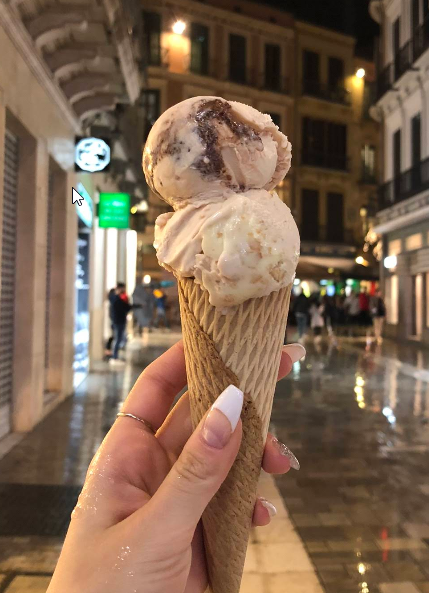
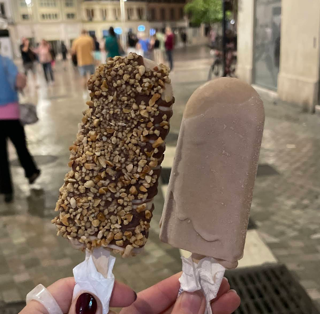
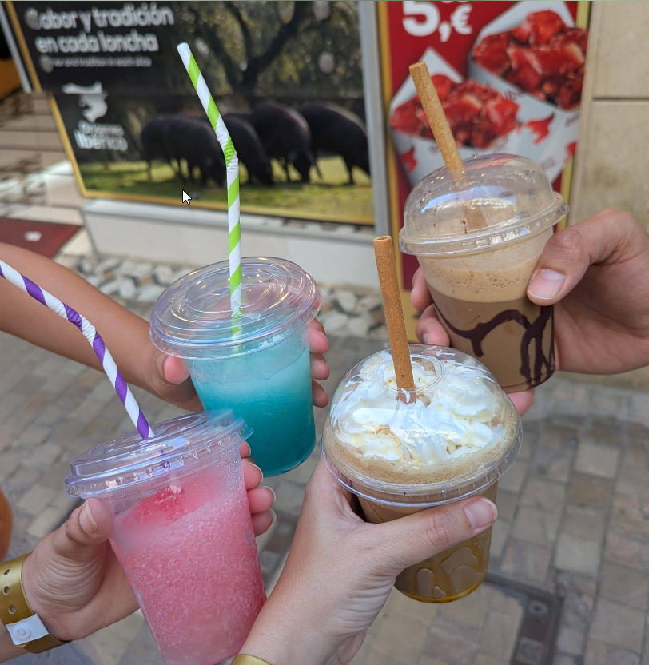
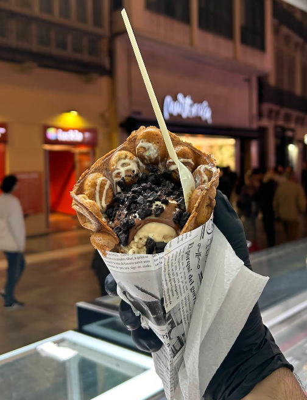

Nuestra Pasión
Desde 2013, nos dedicamos a endulzar los momentos especiales de
nuestros clientes.
Cada helado es preparado diariamente, garantizando frescura y sabor
inigualable.
Porque creemos que los mejores recuerdos se
hacen con los mejores sabores.
Nuestros Productos
Gelato Italiano
Más de 20 sabores cremosos preparados cada día con ingredientes
frescos y auténticas recetas italianas.
Desde los clásicos como pistacho y stracciatella hasta sabores
únicos.

Polos Helados
Polos de fruta 100% natural sin azúcar añadido, perfectos para los
más saludables, o nuestros polos cremosos irresistibles con texturas
suaves que te transportarán al verano italiano.
Frescura garantizada en cada mordisco.

Bebidas Refrescantes
Batidos cremosos, smoothies con frutas naturales, granizados
italianos refrescantes,
frappés de café con nuestro café recién preparado.
La combinación perfecta para acompañar tu helado o disfrutar
por sí solos.

Postres Calientes
Bubble Waffles artesanales esponjosos, crepes finos rellenos con
nutella o chocolates calientes, gofres dorados y tortitas
esponjosas.
Todos personalizables con tus toppings favoritos.

¿Qué nos hace especiales?
Ingredientes De Alta Calidad
Seleccionamos cuidadosamente frutas frescas, pastas de la máxima calidad, frutos secos y los mejores productos italianos.
Recetas Tradicionales
Utilizamos métodos artesanales italianos transmitidos de generación en generación.
Innovación Constante
Cada temporada creamos nuevos sabores sorprendentes que conquistan paladares.
Para Todos
Ofrecemos opciones sin lactosa, sin gluten y veganas, porque todos merecen disfrutar.